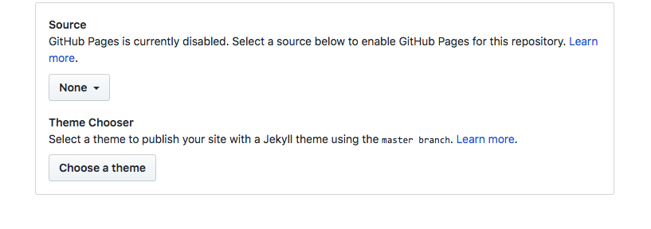
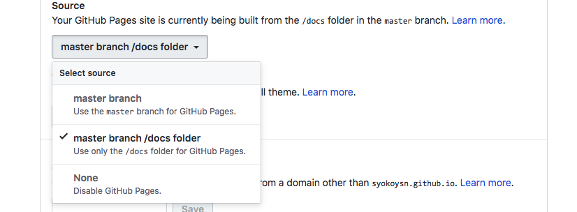
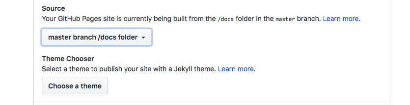

公開¶
ここでは，とりあえず公開することを目標とします．
## ここですること - 作業ディレクトリ作成 - quickstart - HTML作成 - 公開
作業ディレクトリ作成¶
まず ディレクトリを作成し,作ったディレクトリへ移動
ここでは リポジトリ名(how_to_sphinx)と合わせてます.
mkdir how_to_sphinx
cd how_to_sphinx
quickstart¶
次に 下のコマンドを打ちます
sphinx-quickstart
コマンドを打つといくつかの質問がありますが適当に対応してください.
わりとエンター押して飛ばしても構わないです.以下, 今回のサイト作成時に対応したところです.
- Project name
> Project name: sphinxでwebサイト公開してみる - Author name(s) > Author name(s): Shoko Yoshino - Project release > Project release : 0.0.0 - Project language [en]: > Project language [en]: ja
この段階までくると以下のようなディレクトリ構造になっています.
.
├── Makefile
├── build
├── make.bat
└── source
├── _static
├── _templates
├── conf.py
└── index.rst
HTML作成¶
以下のコマンドを打つことで,sourceディレクトリをもとに,サイトで使用されるhtmlを作成します(してくれる).
python -m sphinx source/ build/
make html
ここで,以下のコマンドを入力してみましょう.
open build/index.html
下のようなページが開いたかと思います．

これをgithubに置いて公開します.
公開¶
最後に公開までします
以下のコマンド入力してください.
cp -r build/ docs/
touch docs/.nojekyll
そして,準備していたgithubのリポジトリにpushします.
git init
git add .
git commit -m "適当なメッセージ"
git remote add origin リポジトリのURL
git push -u origin master
最後に github上のリポジトリの設定を行います.
Setting から以下の箇所を 以下のように変更
None => master branch/docs folder
下の図のような流れです.  
そして,
=> 例 今回のやつ:https://syokoysn.github.io/how_to_sphinx/
に行くとりあえずできたのがわかります.
ここまでで, とりあえず公開するところまできました．
次は themeを変更してみます.